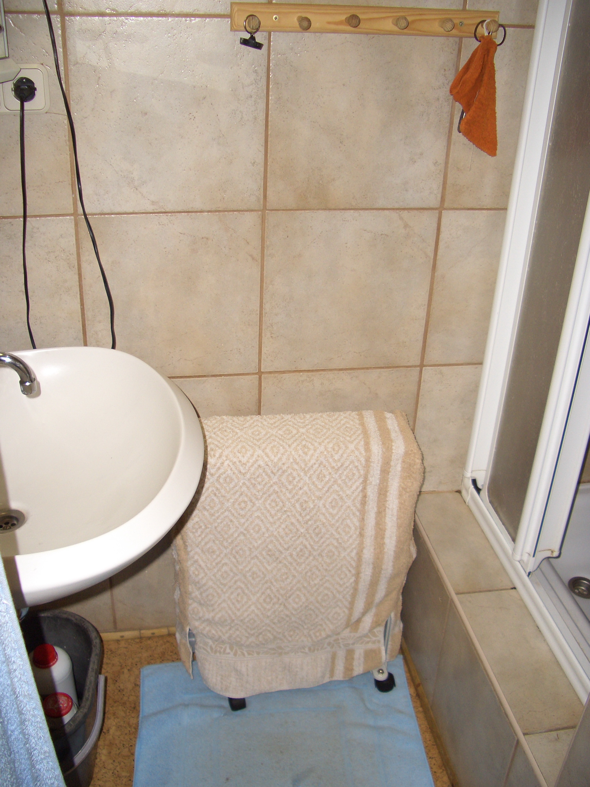
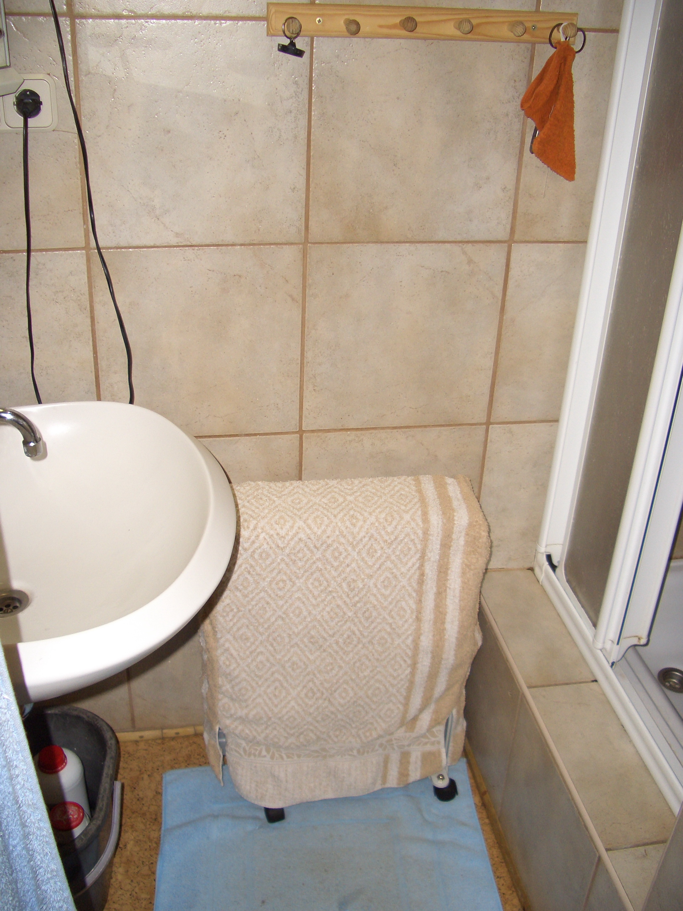

🚗 0. Anreise
📍 Zieladresse
🏔️ Hütte Lienz
Zettersfeld 14
9904 Thurn, Österreich
Zettersfeld 14
9904 Thurn, Österreich
🗺️ Google Maps Anreise 📱 Navigation starten
🪨 Fußweg vom Sporthotel (5-7 Min.)

💡 WICHTIG: Fußweg zur Hütte sind etwa 400m mit 40m Höhenunterschied.
Deswegen empfiehlt es sich, sein Gepäck in Rücksäcken verstaut zu haben.
Je nach Schneehöhe dauert der Weg 5-7 Minuten. Nachts sind Stirnlampen hilfreich.
Deswegen empfiehlt es sich, sein Gepäck in Rücksäcken verstaut zu haben.
Je nach Schneehöhe dauert der Weg 5-7 Minuten. Nachts sind Stirnlampen hilfreich.
- Start: Sporthotel Hochlienz Zettersfeld 1
- Ziel: Hütte Zettersfeld 14 (GPS: 46.865788° N, 12.788949° E)
- Strecke: 400m Fußweg, 40m Höhenunterschied (Aufstieg)
- Parken: Sporthotel oder Parkplätze Thurn (Winterreifen/Panzerketten!)


 
